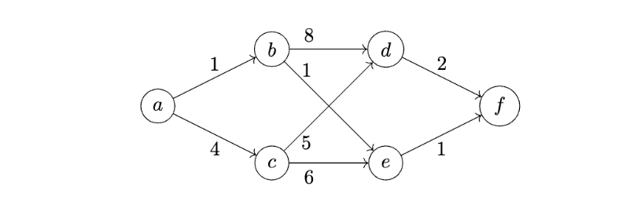
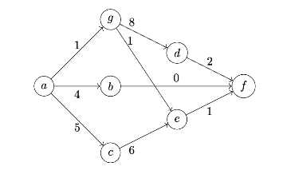

Tags: dijkstra
Suppose Dijkstra's algorithm is run on the graph shown below using node \(a\) as the source.

What will be the fourth node popped from the priority queue? (The first node popped is the source, \(a\).)
Tags: dijkstra
Suppose Dijkstra's algorithm is run on the graph shown below using node \(a\) as the source.

Suppose \(C\) is the set of ``correct'' nodes: that is, \(C\) is the set of nodes whose estimated distances are known to be correct.
What will be the fifth node added to \(C\) by Dijkstra's algorithm? (The first node added to \(C\) is the source, \(a\).)